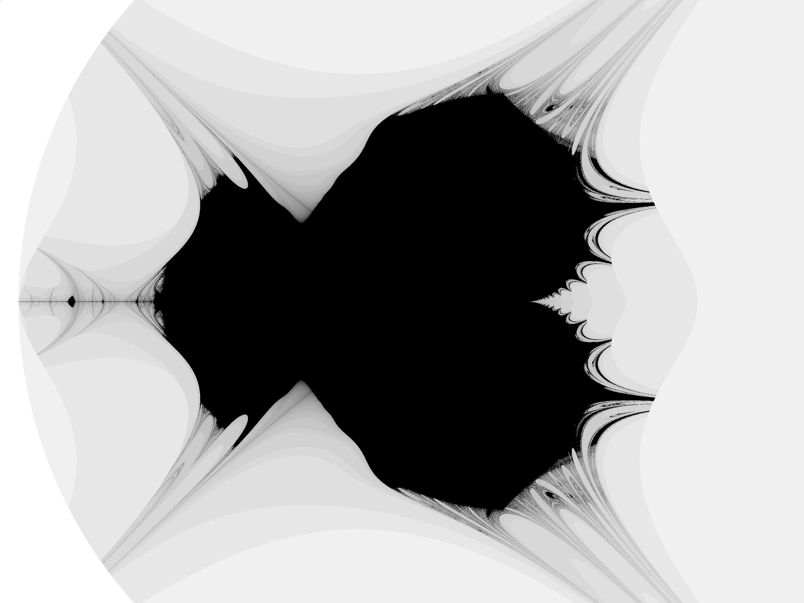

The John Tippets Mandelbrot fractal is generated with the following equation:
With thanks to Paul Bourke.
As Paul Bourke rightly points out: it is hard to imagine that this "discovery" is not a simple programming error, as the technique used to generate this image is a common novice mistake. I made this error on my first attempt, but was not clever enough to call it a dicovery. Lesson learned.

John Tippets Mandelbrot